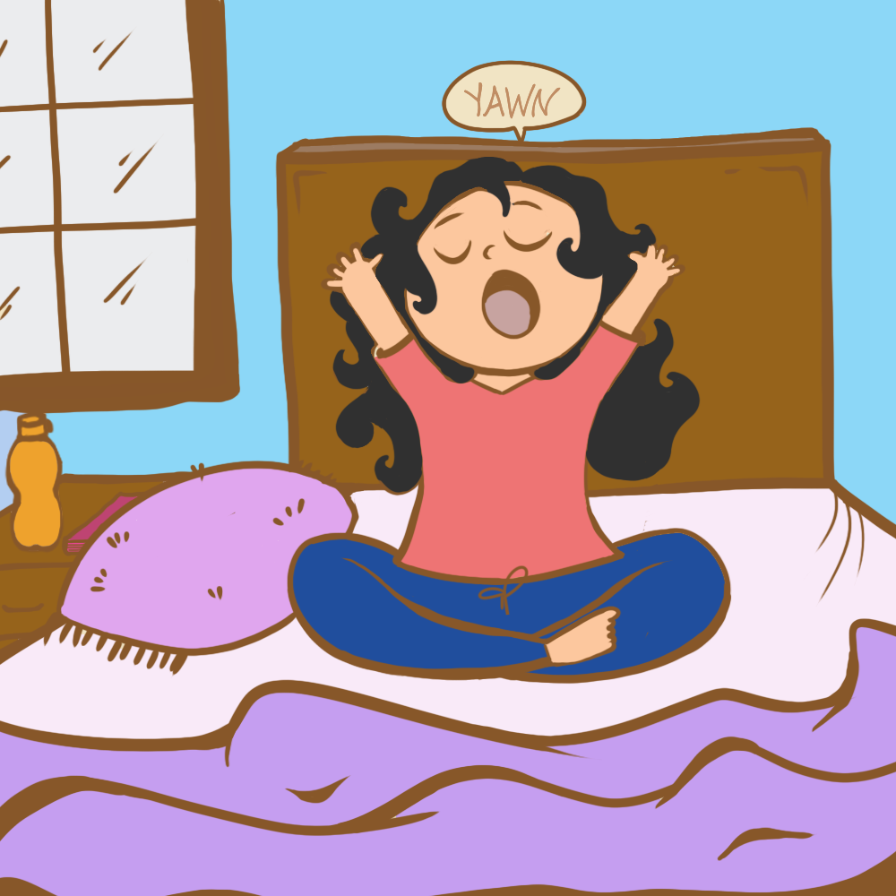

Set A Routine
While most of us would love to sleep in, because we don’t have offices to rush to, having a set time is important for our mental well-being. It helps us feel that we’re in control of the situation. So eat your meals at regular times, and have set times for sleeping and waking up. Unstructured time is known to create boredom and can cause spikes in anxiety or depression.Also, try making to-do lists for the day. Striking things off at the end of the day is therapeutic. But also, don’t beat yourself up if you didn’t complete something. There’s always a new day for that.
Find Your Balance
Instead of waking up to your phone, start your day with meditation. Research shows that meditation reduces the symptoms of depression and anxiety. A good 10-minute meditation in the morning can calm you considerably and enhance self-awareness.But if you’re not the kind to meditate, working out at home is a good way to stay healthy and kill time. Anything that gets your heart pumping or helps build muscle is excellent for both physical and mental health. You can find workout videos online as well as tune into the various Instrgarma live sessions conducted by fitness experts.